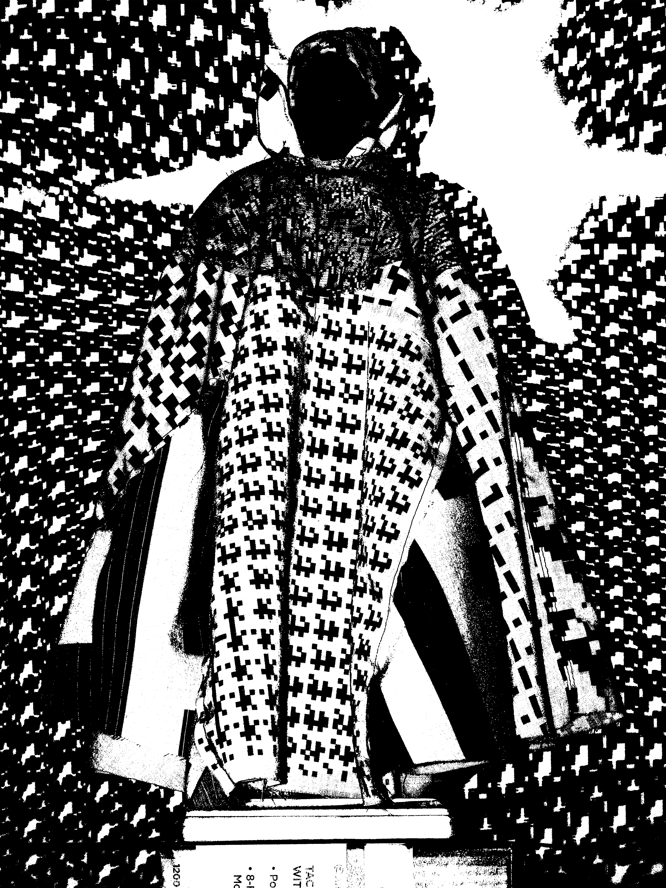
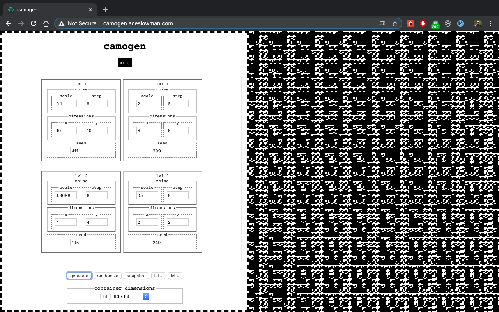

< ⌂ Inkjet Camouflage

Inkjet Camouflage (2020)
Inkjet Camouflage
miniature cloak printed with inkjet printer with 3D printed base
With Inkjet Camouflage I wanted to experiment with fabrication techniques that are unfamiliar to me to create a speculative clothing item meant to disguise it's wearer from surveillance technologies. I'm interested in the ways that DIY tools and tactics can be used to subvert the technologies of surveillance capitalism.

Camogen (first version)
pattern generator created using P5.js
For Inkjet Camouflage I created a pattern generator tool that eventually became camogen.